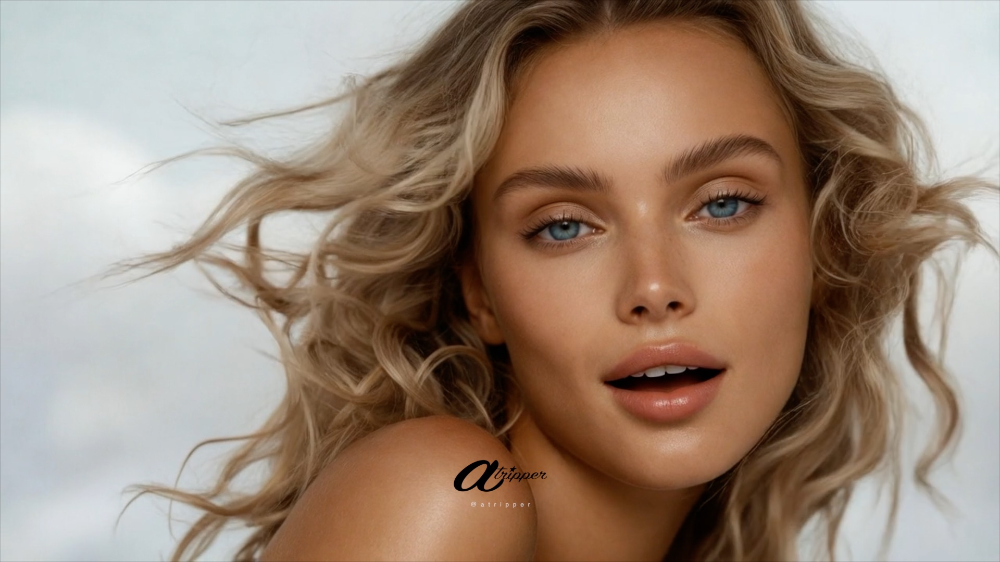
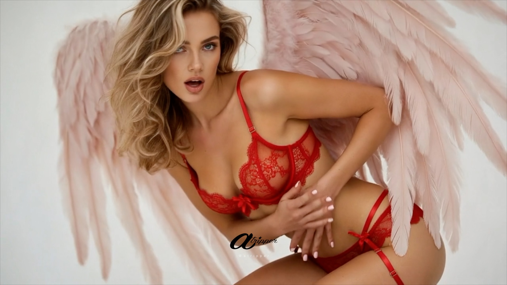
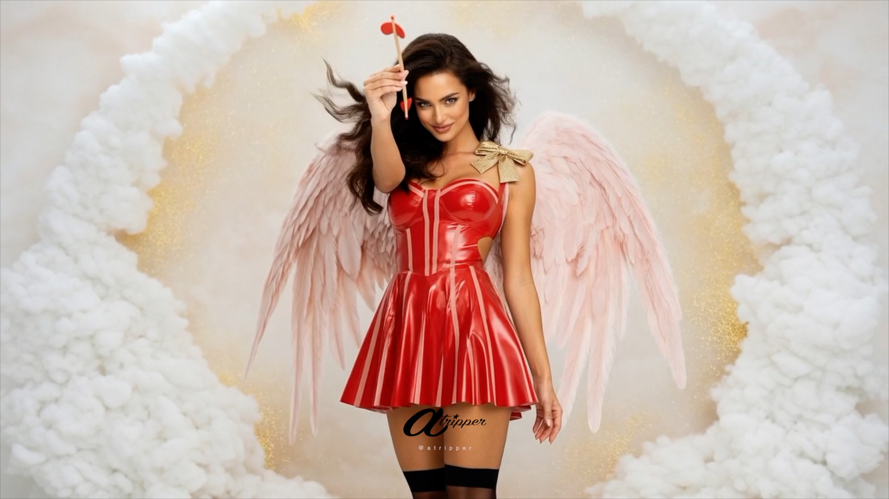
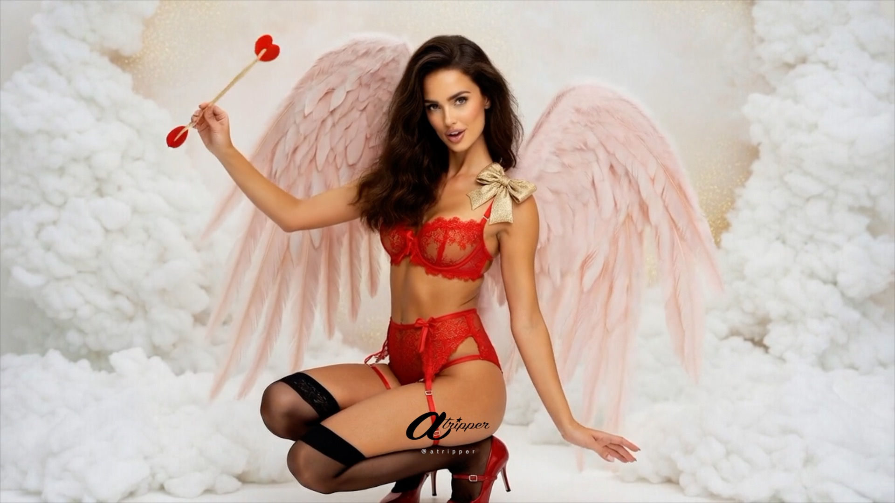
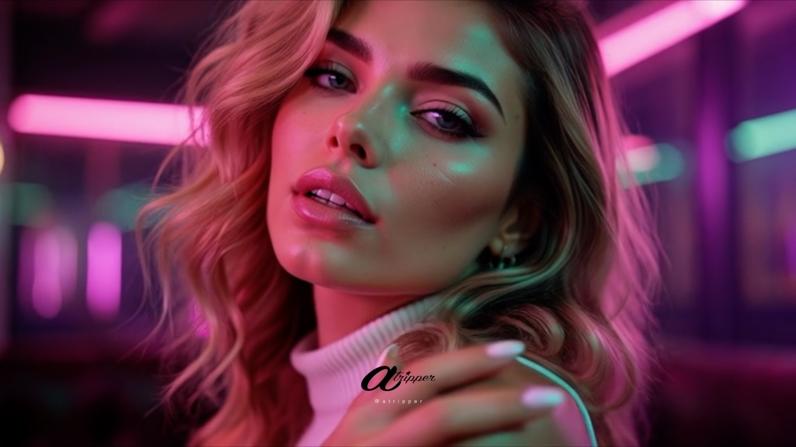
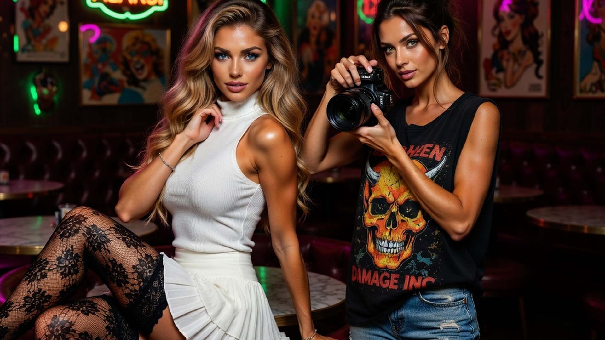
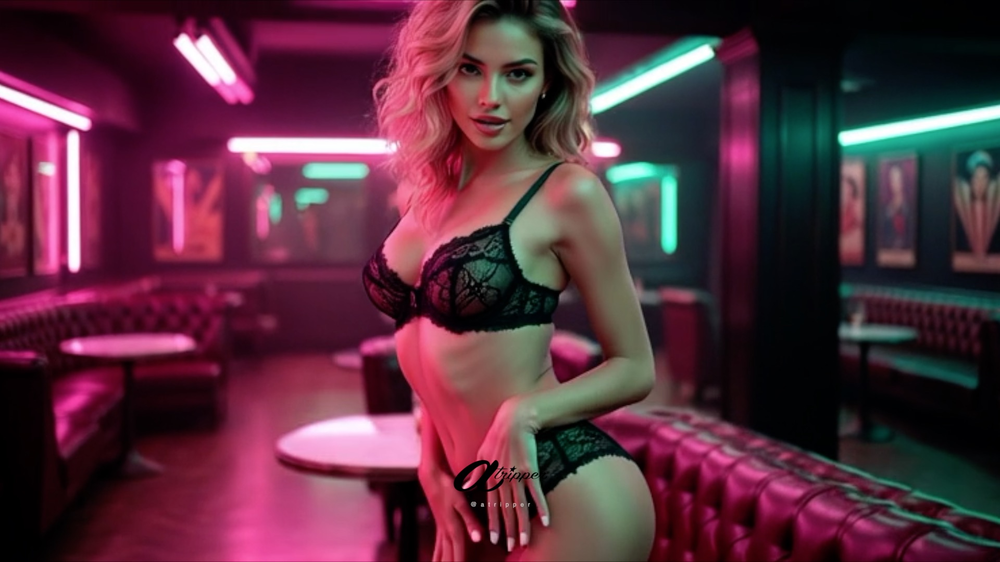
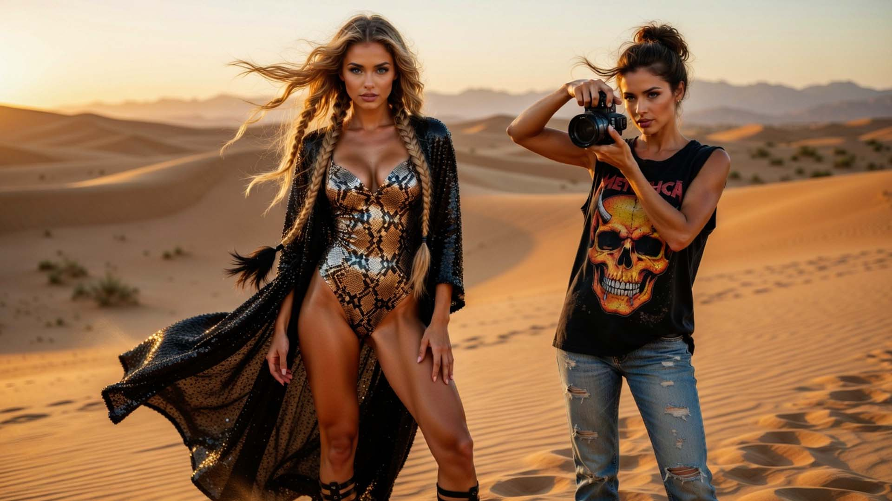
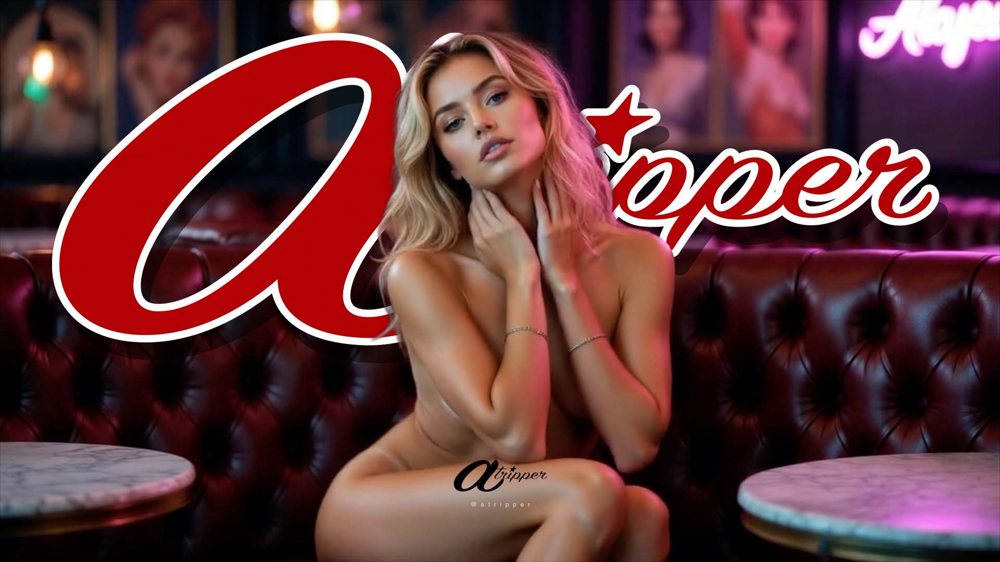
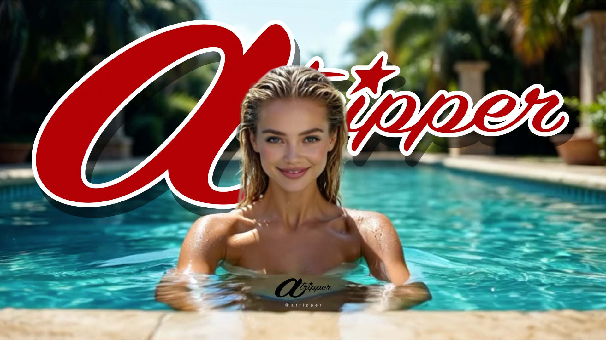

Plataforma de identidades visuales generadas por inteligencia artificial.
PauDi y VykDi exploran el campo del desnudo artístico y la lencería contemporánea
mediante composiciones en 2K con efecto parallax 3D.

Rubia de ojos color zafiro. Expresión elegante y presencia etérea.
Más información sobre PauDi
Morena de ojos color esmeralda. Expresión intensa y magnetismo natural.
Más información sobre VikDi








